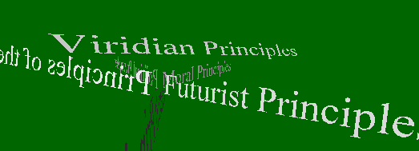

Viridian Principles in VRML (version 2.0).
Attention Conservaton notice: This is an experimental VRML presentation of the Viridian Principles as in Viridian Note 00003. It's nothing more than typography in three dimensions - on a green background. You need a VRML plugin to view it or you'll only see the preview images.
UPDATED AND REVISED! Thanks to kind advise from fellow Viridian Viveka Weiley the VRML browser now defaults to spin controls, making the site a lot more user-friendly and smooth.

Introduction: I never got the viridian principles the first time I read them, so I decided to go back and work with them a little to see if I could get a better hold of them. First I thought of making a Calderesque mobile where different parts could be inscribed with the data of the principes (as a standard website using DHTML). Instead I chose to make something more like the Visual Thesaurus: the principles are presented as ASCII text floating in different directions in 3-d space. You are now able to rotate and read the text from different angels, and perhaps, get a graphical image, a structure of how the different principles correspond. It could, of course, have been more visually engaging if the principles had been engraved on 3-d models of geometrically interesting bacteria, plancton, or the cilia of Big Mike. The file size of such projects would soon rise to absurd dimensions (at least for todays internet conditions). Instead I opted to make the site as small and minimalistic as possible: the average file size in this VRML presentation is 4k. The VRML presentation totals at 91k, making the download of the actual site fast (the plugin is still a stiff 3.1M).
Example .gif image of the site.
Instructions: To view this site you need a VRML 2.0 plugin such as the Cosmo player (official site). If the official site is down (happens a lot) use Vivekas mirror site. Tip to Mac users: increase your Netscape memory allocation to 60Mb when you use the plugin. More resources here.
The keywords are hyperlinks -click text to navigate. Use your browsers back button to move back.
(plume of CO2 saturated smoke rising to the sky)
designed by joel westerberg
Back to Viridian index at Unsafe